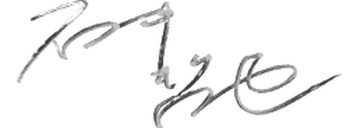

SIDE A ▶
番組の楽しみ方
パーソナリティ・石井哲也アナウンサーより
ナウヤン同盟のみなさん。
「Music Pick Up 80's & 90's」パーソナリティの石井哲也です。
このたび、ファンサイト「ナウヤン同盟の部屋」のHPが誕生したこと、大変うれしく思っております！ 私も公認しております。ぜひ、番組を聴く際の参考になさってください。
改めて、いつも番組をお聴きいただきありがとうございます！
リクエストをして楽しむ方、Ｘのポストをして楽しむ方、オンエアをリアルタイムで楽しむ方、タイムフリーでも楽しむ方など、楽しみ方は無限大です！
その中で、これだけはナウヤン同盟のみなさん共通の想いでいてほしいことをお伝えします。
とにかく、火曜夜10時からの2時間を楽しんで素敵な時間にしてください！
リクエストに関しても、リクエストに通ったらもちろんうれしいですが、仮にリクエストに通らなかったとしても番組を楽しめるようにしましょうね！
そして、2時間の生放送が終わったら、ナウヤン同盟みんなが同じ気持ちで「楽しかったー」と思ってもらえたら「哲也かーんげき！」です。
これからもずっと「Music Pick Up 80's & 90's」を応援してください！
2026.6.23
